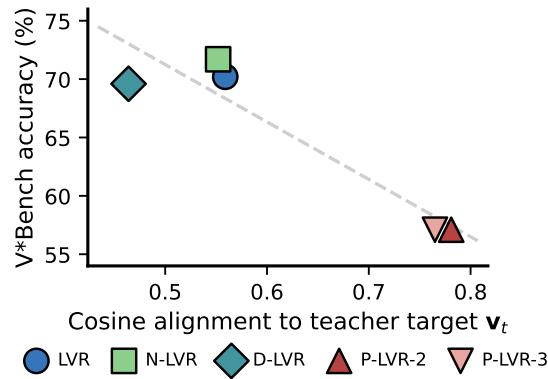

Figureure 2 · : PRISM overviewFigure 2: PRISM overview. Two inference-time diagnostics for the LVR family. Axis 1 trains linear probes (Alain and Bengio, 2018) at two positions in the model: (a) the answer-decoding state the LM head reads, and (b) the feedback variable the autoregressive loop re-injects. We report the decodability gap $G = a c c _ { p r o b e } ( a ) - a c c _ { p r o b e } ( b )$ , which summarizes how much more answer-decodable the post-latent state is than the latent. Axis 2 perturbs the LVR-injected hidden states (latents) in generation (truncation, noise, swap) and measures the change in accuracy; small |∆acc| means the latent is bypassed. Section 5 shows the two axes are tied: G predicts each variant’s response to latent perturbation.这张图概括 Cosine Misleads 的整体方法流程。阅读时先看模块之间传递的训练信号，再看作者如何把目标拆成可优化的子问题。

Cosine misleads: r = 0.94 across variants Figure 1: Cosine misleadsCosine misleads: r = 0.94 across variants Figure 1: Cosine misleads. Cosine alignment between LVR-position hidden states and their teacher-forced visual targets is negatively correlated with V∗Bench accuracy across all five trained variants (Pearson r=−0.94). Progressive variants (P-LVR-2, P-LVR-3) reach the highest cosine but the lowest accuracy.这张图/表用于判断 Cosine Misleads 的实验收益来自哪里。重点看替换、消融或跨模型设置下趋势是否一致，而不是只看单个最高分。